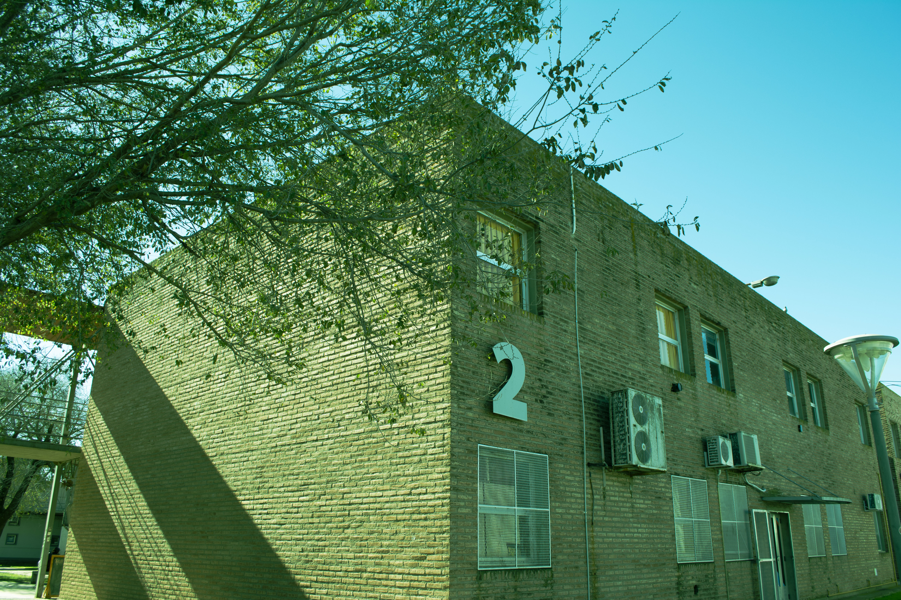
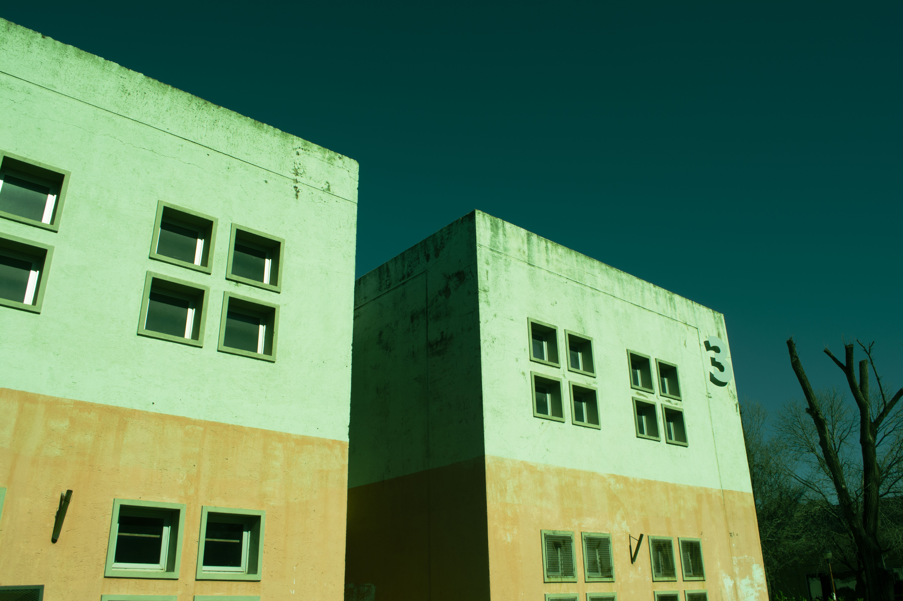

¿Sacrificio garantizado o desigualdad invisibilizada? Un desglose crítico sobre la presión en la universidad pública.
Tradicionalmente, se define como un sistema moral centrado en la exigencia estricta y el sacrificio individual. Ligada a la búsqueda de la excelencia, opera como el argumento principal para justificar quiénes obtienen las ventajas dentro de las aulas.
Sin embargo, los nuevos enfoques estudiantiles revelan una trampa: al centrarse únicamente en el empeño personal, el sistema individualiza el éxito y el fracaso, transformándose en una herramienta que culpabiliza al estudiante por sus resultados sin mirar sus condiciones de partida.

Funciona como el pilar ideológico que justifica la exigencia académica masiva. Al exigir sin contemplar las realidades particulares de cada estudiante, el ecosistema universitario actual empuja a niveles alarmantes de estrés crónico, frustración extrema y parálisis.
"Se nos exige rendir al máximo sin tomar en consideración los factores individuales, lo que nos empuja a situaciones de estrés crónico y frustración extrema."
En la Universidad Nacional de Río Cuarto, el valor del sacrificio permanente aparece naturalizado en la rutina estudiantil. En un contexto socioeconómico cada vez más complejo, las experiencias de agotamiento demuestran que transitar la carrera no depende solo de la voluntad, sino de las realidades económicas y emocionales que cruzan a nuestra comunidad.
El proyecto busca generar un espacio de reflexión entre estudiantes y docentes para visibilizar estas trayectorias desde la complejidad, evitando miradas deterministas y abriendo el debate colectivo.
